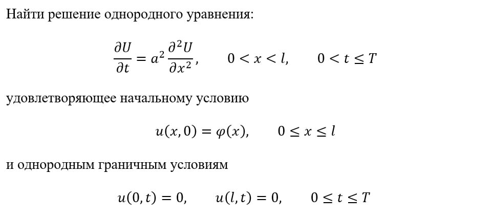
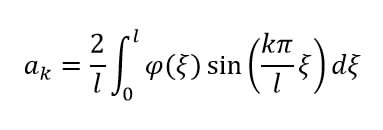
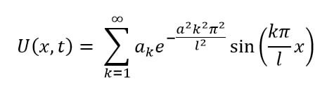

Решение однородных уравнений диффузии методом Фурье
Назад к главной
Шаг 1. Записать условия поставленной задачи. В общем виде условие выглядит так:

Шаг 2. Вычислить коэффициент Фурье ak по формуле:

В данной формуле переменная ξ нужна только для выполнения интегрирования, после чего будет заменена на пределы интегрирования.
Шаг 3. Записать решение в виде суммы членов ряда Фурье:
